一、從新石器時代到鐵器時代
-------------- (二)新石器時代中期的「繩紋陶文化」
-------------- (三)新石器時代晚期的「圓山文化」
------------------ 1.陶器
------------------ 2.玉器
------------------ 3.石器
------------------ 4.骨尖器與飾品
-------------- (四)新石器時代末期的「植物園文化」
-------------- (五)鐵器時代的「十三行文化」
------------------ 1.陶器
------------------ 2.石器與骨器
------------------ 3.玻璃與玉製飾品
和平島位於基隆港的東北方，是基隆港的出入扼口。該島以「社寮島」為主體，並包含西側的「桶盤嶼」和北側「中山仔嶼」，東岸以狹窄的「八尺門」海道與臺灣島相隔；面積約75公頃，含海蝕平台則達到82.98公頃。據考古發現，距今4500-3500年前，島上就有新石器時代中期繩紋陶文化的人類聚落，與淡水河口的「訊塘埔文化」類同；其後則有距今3500-2300年前新石器時代晚期的「圓山文化」、距今2300-1800年前新石器時代末期的「植物園文化」，以及距今1800-400年前鐵器時代的「十三行文化」。其中，「訊塘埔文化」屬「大坌坑文化」的晚期，而「大坌坑文化」被認為應是從廣東、福建等華南沿海地區移民而來；「圓山文化」則可能是從廣東沿海的海豐到香港一帶移入；「植物園文化」則是從福建南部印紋軟陶文化的後裔。這些史前文化的主人，就是現代臺灣原住民的祖先。他們原是古代閩越人的一支，在其文明發展的初期，即伴隨有海洋文化萌生，是比漢人更早的海洋移民，而且也可能與南島語族的祖先有共同的淵源。「十三行文化」的方格印紋陶和幾何印紋陶起源於中國東南沿海地區，被認為是百越族群的表徵。
此外，新石器時代晚期的玉料係從花蓮豐田而來，反映當時的和平島已與花蓮沿岸地區有商貿來往；「十三行文化」鐵器時代的玻璃飾品則應來自中國大陸或東南亞。可見和平島自史前時代就已是北、東臺灣之間以及東亞海貿圈的一環，臺灣周圍海域一直存在海洋活動，人們沿岸或跨海航行。由於基隆和淡水處於大陸百越文化和黑潮文化交界的地理位置，故其史前文化亦兼有兩者文化的影響，並反映史前華南人民跨海遷居於此的可能性。這種歷史地理的背景，也造就歷史上「雞籠」的原住民向來擅於海洋貿易的特質。（黃麗生，2019，1-5。）
圖1-1 和平島與臺灣北部史前文化年代對照圖
說明：
距今4500-3500年前，和平島上就有新石器時代中期繩紋陶文化的人類聚落，與淡水河口的「訊塘埔文化」類同；其後則有距今3500-2300年前新石器時代晚期的「圓山文化」、距今2300-1800年前新石器時代末期的「植物園文化」，以及距今1800-400年前鐵器時代的「十三行文化」。可見和平島史前文化與臺北盆地及其周邊緊密關聯之一斑！
（距今4500-3500年前）
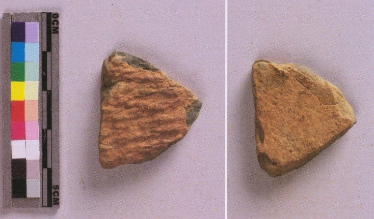
圖1-2 黃褐色繩紋陶
（見於鮑曉歐：2015，155。編號HPD-B-II-SM-15)，2012/10/25出土於和平島平一路停車場。
說明：
黃褐色繩紋陶可能屬於臺灣北部的「訊塘埔文化」（新石器時代中期，約4500-3500BP），可視為和平島開始出現人類聚落的象徵。(鮑曉歐：2015，155; 302) 「訊塘埔文化」屬「大坌坑文化」的晚期，「大坌坑文化」被認為應是從廣東、福建等華南沿海地區移民而來。
（距今3500-2300年前）
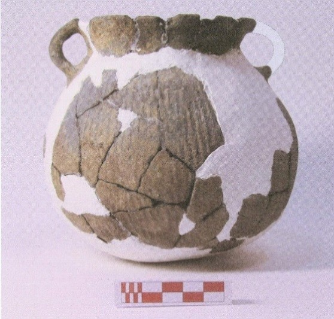
圖1-3-1-1「雙手把罐」(見於鮑曉歐：2015，158。編號HPD-B-P5795)，2012/10/25出土於和平島平一路停車場，屬於臺灣北部「圓山文化」（新石器時代晚期，約3500-2300BP）。其除了罐身有繩紋外，手把部份出現手製的葉脈紋飾。(鮑曉歐：2015，158;302)
圖1-3-1-2「圓山文化夾砂陶腹片」（見於鮑曉歐：2015，163，編號HPD-II-SM-12），2012/10/25出土於和平島平一路停車場。
圖1-3-1-3「（素面灰褐色夾砂陶）罐口」（見於鮑曉歐：2015，167，編號HPD-B-P1884），2011/11/2出土於和平島平一路停車場。
圖1-3-1-4「灰褐色陶器口緣」（見於鮑曉歐：2015，169，編號HPD-B-P1859），2011/11/11出土於和平島平一路停車場。
圖1-3-1-5「（素面黃褐色陶器）罐口」（見於鮑曉歐：2015，171，編號HPD-B-P1885），2011年11月2日出土於和平島平一路停車場。(鮑曉歐：2015，163-171; 302)
圖1-3-1-1、圖1-3-1-2、圖1-3-1-3、圖1-3-1-4、圖1-3-1-5皆屬於臺灣北部「圓山文化」。「圓山文化」（新石器時代晚期，約3500-2300BP）概從廣東沿海的海豐到香港一帶移入。
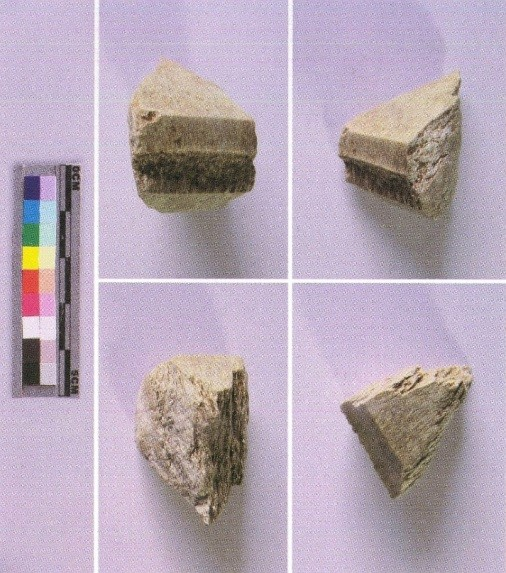
圖1-3-2-1「已切割的玉料」（見於鮑曉歐：2015，173，編號HPD-B-S0317），2012/10/30出土於和平島平一路停車場。
圖1-3-2-2「軟玉（見於鮑曉歐：2015，175，編號HPD-B-II-SM-27），2012/11/08出土於和平島平一路停車場。
圖1-3-2-3「切割玉料的工具─石英」（見於鮑曉歐：2015，174，編號HPD-B-II-SM-05），2011/11/10出土於和平島平一路停車場。（鮑曉歐：2015，173-175; 302）
圖1-3-2-4「磨製玉鏃」（見於鮑曉歐：2015，177，編號HPD-B-I-SM-12），2011/11/02出土於和平島平一路停車場。
圖1-3-2-5「磨製玉錛」（見於鮑曉歐：2015，179，編號HPD-B-II-SM-26），2012/11/08出土於和平島平一路停車場。
說明：
上述圖1-3-2-1「已切割的玉料」和圖1-3-2-2「軟玉」都是來自於花蓮的豐田玉。已切割的玉料也見於臺灣其他考古遺址，說明臺灣在新石器時代晚期已出現玉料貿易市場，並可能有流動性玉匠的出現。而圖1-3-2-3切割玉料的工具的出土，反映和平島在史前時代已是玉器的製作中心之一。（鮑曉歐：2015，173）事實上，花蓮豐田玉在臺灣新石器時代的晚期後段（距今2400 B.P.- 1600/ 1000B.P.），除了在臺灣之外，也出現在南海周邊地區，形成以臺灣花蓮閃玉為特點，從臺灣東部、北部，遠至菲律賓、婆羅洲、越南、泰國等地之長期交換體系與長程交通路線的「南島之路」。（劉益昌，2015，98-102；劉益昌，2019，159-172）和平島出土的豐田玉，則說明和平島也是此「南島之路」長期交換體系中的一環。（黃麗生，2019，8）鏃本為漁獵工具，而圖1-3-2-4則屬精美玉鏃，可能是儀式性禮器，而不是實用器。錛是一種木工工具，但也可以掘土、刮皮、削肉。（鮑曉歐：2015，176-178; 302）圖1-3-2-5是磨製玉錛，其型制小，尚無法確認其是否也是一種儀式性禮器而不是實用器。
圖1-3-3-1「磨製硬頁岩錛」（見於鮑曉歐：2015，179，編號HPD-B-II-SM-23），2012/11/08出土於和平島平一路停車場。
圖1-3-3-2「磨製石鑿」（見於鮑曉歐：2015，177，編號H PD-B-II-SM-25），2012/11/08出土於和平島平一路停車場。
圖1-3-3-3「兩縊型網墜」（見於鮑曉歐：2015，183，編號HPD-B-I-SM-13），2012/10/25出土於和平島平一路停車場。
圖1-3-3-4「石錘」（見於鮑曉歐：2015，184，編號HPD-B-S0296），2012/11/07出土於和平島平一路停車場。
說明：
錛和鑿都是木工工具，但錛也可以掘土、刮皮、削肉，圖1-3-3-1的「磨製硬頁岩錛」應該就是二、三千多年前和平島民日常使用的一種多功能工具。石鑿則用於雕刻、挖削等比較細緻的木工。和平島出土的圖1-3-3-2「磨製石鑿」是一種圓鑿，較為少見，反映了在臺灣的新石器時代晚期，和平島已有比較精巧的木工工藝。網墜是綁於漁網各端，便於拋出並下沈海中以利捕漁的用具。一般有二種型制：一是在兩端刻成凹槽以便綁繩，稱為「兩縊型網墜」；另一種是凹槽刻在中間，稱為「砝碼型網墜」。圖1-3-3-3「兩縊型網墜」呈現了距今二、三千多年前和平島民使用的漁具漁法。石錘是用來捶打其他物件或食物，如具類、獸骨、核果等的用具，其功能類似石杵，但不安裝木柄，而是徒手握持捶打。圖1-3-3-4就是當時和平島民使用的「石錘」。（鮑曉歐：2015，178-184; 302）石製的錛、鑿、網墜和捶具，反映了新石器時代晚期和平島民從事工、漁、農業生產的樣態。
圖1-3-4-1「磨製骨尖器」（見於鮑曉歐：2015，187，編號HPD-B-S0273），2011/11/11出土於和平島平一路停車場。
圖1-3-4-2「灰色陶環」（見於鮑曉歐：2015，191，編號H PD-B-II-SM-17），2012/10/30出土於和平島平一路停車場。
圖1-3-4-3「玉管珠」（見於鮑曉歐：2015，195，編號H PD-B-II-SM-14），2012/10/25出土於和平島平一路停車場。
說明：
磨製骨尖器是利用動物骨頭或獸角，將其一端或二端磨尖，並在其一端鑽孔後以作縫製之用。和平島出土的骨尖器二種都有，且有大小不同的規格，顯現其用在不同的縫製需要。圖1-3-4-1的「磨製骨尖器」是其中之一。陶環是由陶土燒製而成的環狀裝飾品，在臺灣新石器時代甚為普遍。和平島的圓山文化層也有不少片段殘件，有黑色、灰色二種顏色和細管、環帶二種形狀；圖1-3-4-2呈現的是其中二種型態的灰色陶環。玉管珠也是臺灣新石器時代常見的玉器飾品，圖1-3-4-3呈現的是和平島出土的玉管珠；其係由花蓮玉料切割後通體精磨而成，呈長條方型柱體，四角略磨圓，中間有兩面對穿的圓孔。（鮑曉歐：2015，186-187; 190-195; 302）和平島出土的玉管珠直徑約0.5公分，每段長約1.5公分，顏色淡綠帶有褐色斑紋，比起同時期圓山出土的玉管珠更加精巧細緻。
（距今2300-1800年前）
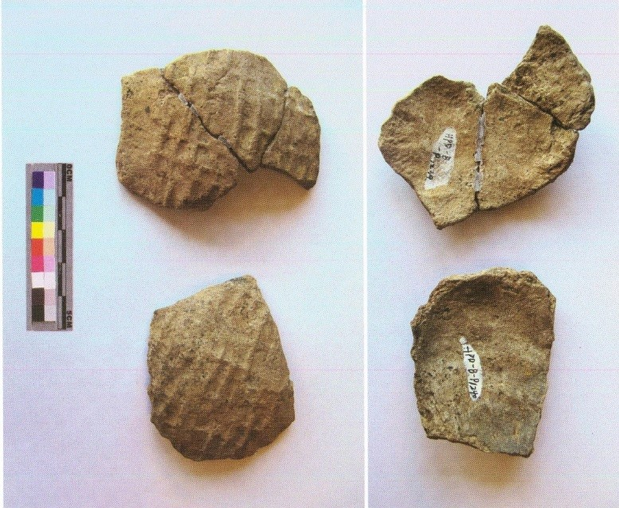
圖1-4「方格印紋陶」
（見於鮑曉歐：2015，201，編號HPD-B-P1239; HPD-B-P1240），2011/11/11出土於和平島平一路停車場。
說明：
圖1-4所示為和平島出土之「方格印紋陶」的其中二種，有明顯的方格印紋，是木製的陶拍拍打而成，屬於新石器時代末期的「植物園文化」（距今2300-1800年前）。「植物園文化」係福建南部印紋軟陶文化的後裔。植物園文化時期的方格印紋陶罐除了在臺北外，也出現宜蘭、花蓮地區。（鮑曉歐：2015，198-201; 302）因此，和平島的方格印紋陶到底是本地燒製？抑或是交易所得？令人好奇。此雖仍有待考證，但也反映出和平島和臺灣東部之間不但形成玉料貿易的市場，也可能進行陶器的交易。
（距今1800-400年前）
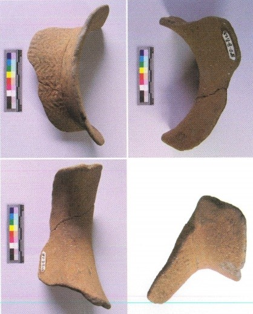
圖1-5-1-1「幾何印紋陶」（見於鮑曉歐：2015，205，編號HPD-B-P1928），2011/11/17出土於和平島平一路停車場。
圖1-5-1-2「幾何印紋陶」（見於鮑曉歐：2015，209，編號HPD-B-II-SM-20），2012/10/24出土於和平島平一路停車場。
圖1-5-1-3「幾何印紋陶」（見於鮑曉歐：2015，211，編號HPD-B-P1886; HPD-B-P1887; HPD-B-P1889;），2011/11/02出土於和平島平一路停車場。
圖1-5-1-4「方格印紋陶」（見於鮑曉歐：2015，214，編號HPD-B-P1699; HPD-B-P1043），2011/11/05; 2011/11/03出土於和平島平一路停車場。
圖1-5-1-5「方格印紋陶」（見於鮑曉歐：2015，215，編號HPD-B-P1015; HPD-B-P0963; HPD-B-P0950），2011/11/04出土於和平島平一路停車場。
圖1-5-1-6「方格印紋陶」（見於鮑曉歐：2015，217，編號HPD-B-P1064; HPD-B-P0996），2011/11/05; 2011/10/31出土於和平島平一路停車場。（鮑曉歐：2015，205-217; 302）
說明：
據黃士強研究，幾何印紋陶在臺灣北部的出現可溯自二千多年前的植物園文化時期，一直到十三行文化時期仍甚為普遍，乃至於北部原住民和宜蘭的噶瑪蘭族一直使用到近代。郭素秋則進一步指出方格印紋陶也可溯自二千多年前的植物園文化時期，而且方格印紋陶和幾何印紋陶起源於中國東南沿海地區，甚至被認為是百越族群的表徵。和平島出土的幾何印紋陶和方格印紋陶都形式多樣，紋路較前複雜，而且色彩多元，有黑色、灰色、磚紅色以及帶紅的褐色。（鮑曉歐：2015，205-217）它們不但反映出和平島在十三行文化時期，陶器用品趨於豐富多元並可能牽連著北、東臺灣海洋貿易的市場，而且也印證了島上史前文化的起源蘊含了與百越族群的關聯。
圖1-5-2-1「磨製石錛」（見於鮑曉歐：2015，219，編號HPD-I-SM-09），2011/11/24出土於和平島平一路停車場。
圖1-5-2-2「磨製玉錛」（見於鮑曉歐：2015，219，編號HPD-I-SM-02），2011/12/03出土於和平島平一路停車場。
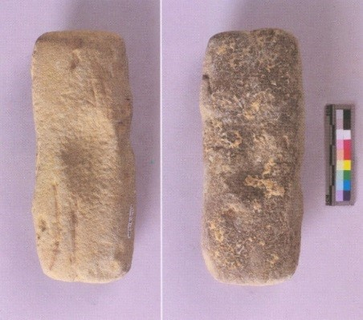
圖1-5-2-3「凹石」（見於鮑曉歐：2015，222，編號HPD-B-S014），2011/11/07出土於和平島平一路停車場。
圖1-5-2-4「石鋤」（見於鮑曉歐：2015，225，編號HPD-B-S0154），2011/12/16出土於和平島平一路停車場。
圖1-5-2-5「磨製板岩石鏃」（見於鮑曉歐：2015，232，編號HPD-B-II-SM-21），2012出土於和平島平一路停車場。
圖1-5-2-6「磨製骨尖器」（見於鮑曉歐：2015，234，編號HPD-B-II-SM-29），2012出土於和平島平一路停車場。（鮑曉歐：2015，219-234;302）
說明：
「十三行文化」雖號稱為「鐵器時代」，但石器仍為廣泛使用。上述和平島出土之屬於「十三行文化」的各種石器和骨器仍是新石器時代的典型器物，反映了當時島民從事木工、石工、縫工以及農耕、漁獵的生產樣態。圖1-5-2-1的「磨製石錛」和圖1-5-2-2的「磨製玉錛」是具有多功能的木工工具；圖1-5-2-3「凹石」則是捶打工具，也可作為石砧之用；圖1-5-2-4的「石鋤」是鋤地的農具，直到近代不少臺灣原住民仍在使用；圖1-5-2-5「磨製板岩石鏃」穿有小孔以便於繫綁於木枝，是重要的漁獵工具。比起和平島圓山文化時代的磨製石鏃，此穿孔的磨製板岩石鏃似較為精細。此時期和平島的磨製骨尖器，傳承了圓山文化時代兩端或一端磨尖的二種形式；但圖1-5-2-6的「磨製骨尖器」似採用略有弧度的骨材，且尖端處呈圓尖型，有別於一般所見的針尖型，可能是用來縫製漁網之用。（參見鮑曉歐：2015，219-234）
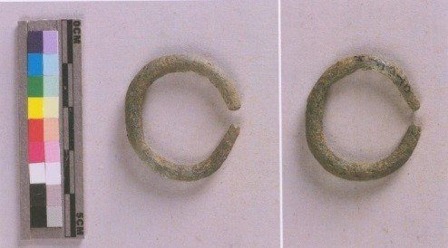
圖1-5-3-1「玻璃耳環」（見於鮑曉歐：2015，227，編號HPD-B-I-SM-10），2011/12/14出土於和平島平一路停車場。（鮑曉歐：2015，226-227;302）
圖1-5-3-2「玻璃珠」（見於鮑曉歐：2015，229，編號HPD-B-I-SM-08; HPD-B-I-SM-06; HPD-B-I-SM-11），2011/12/16; 2011/11/10; 2011/12/07出土於和平島平一路停車場。（鮑曉歐：2015，228-229;302）
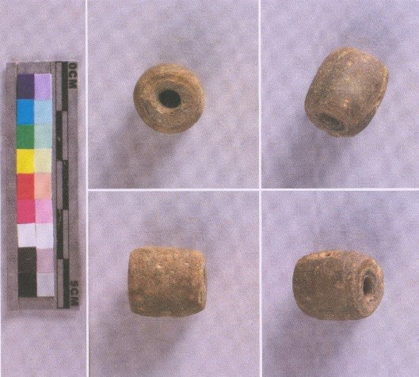
圖1-5-3-3「夾金屬箔玻璃珠」（見於鮑曉歐：2015，231，編號HPD-B-I-SM-07），2011/11/26出土於和平島平一路停車場。（鮑曉歐：2015，230-231;302）
圖1-5-3-4「玉耳環殘件」（見於鮑曉歐：2015，233，編號HPD-B-I-SM-17），2011/12/07出土於和平島平一路停車場。（鮑曉歐：2015，219-234;302）
說明：
和平島出土的「十三行文化」器物主要仍以新石器時代的陶器和石器為主，雖然考古現場「文化層」的地層內涵有「鐵渣」遺留，並在該層土面上有形似「火塘」的堆石結構，可推測為鐵器時代人群生活的遺跡。（鮑曉歐：2015，105-113）但和平島迄今尚無鐵器或其他金屬器物出土，僅有玻璃和夾金箔的玻璃飾品堪稱是鐵器時代的器物。玻璃飾品在臺灣鐵器時代才由外地輸入，其來源包括中國大陸和東南亞地區，主要為耳環、手環和項鍊等。「十三行文化」中的玻璃珠飾頗為普遍，不但種類繁多，色彩多元，數量亦大，反映了當時玻璃商品在東亞海貿市場重要之一斑。圖1-5-3-1的「玻璃耳環」是死去嬰兒的陪葬品；圖1-5-3-2的「玻璃珠」精巧透明、形色多樣；圖1-5-3-3「夾金屬箔玻璃珠」出現在鐵器時代晚期，係在內芯與外殼之間夾有純度黃金，更顯現其工藝的高超與特殊；在在印證和平島在鐵器時代玻璃飾品的普遍，及其嵌入東亞海洋貿易市場的歷史軌跡。相對於此，和平島「十三行文化」時期中的玉器數量遠不如圓山文化時期。圖1-5-3-4原料來自於花蓮豐田的「玉耳環殘件」，雖象徵和平島延續了新石器時代以來與臺灣東部的貿易傳統，但此時似僅以傳世品為主，流行飾品已為玻璃所取代。（參見鮑曉歐：2015，226-233。）
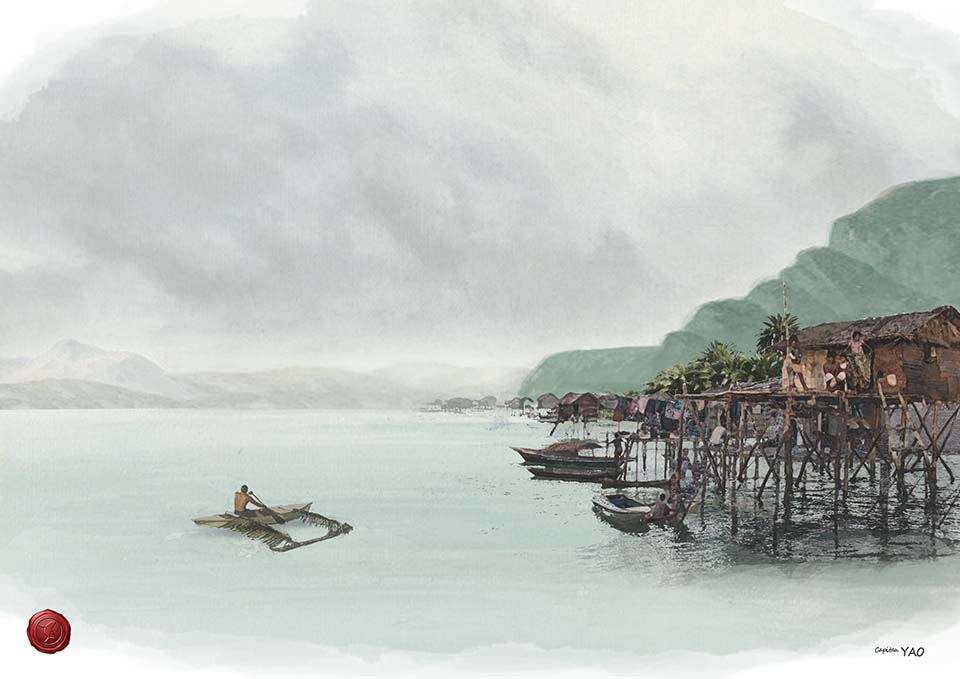
二、巴賽人（Basai）的移入
--------- (二)巴賽人的文化特徵
--------- (三)巴賽人的聚落
--------- (四)擅長海洋貿易的巴賽人
--------- (五)明代張燮《東西洋考》中的雞籠人
--------- (六)西班牙眼中的巴賽人
現存最早定居和平島的原住民是「凱達格蘭族」巴賽人（Basai）。他們的祖先可能源自於菲律賓群島方向的Sanasai島，二千年前，經由臺灣東部海域至北海岸登陸，再逐漸移居和平島等地。1626年佔領和平島的西班牙人根據當地土著的自稱而稱之為「巴賽人」（Basai）。但1900年伊能嘉矩將臺北盆地、淡水、基隆等北海岸的原住民歸稱為「凱達格蘭族」；至1944年小川尚義主張北海岸與臺北盆地的人群應有所差異；而且1956年馬淵東一再予辨正，並根據人群自稱原則將北海岸和宜蘭沿海地區的人群命名為「巴賽人」（Basai）；後來雖有一些變動，但臺北、基隆沿海的原住民被標示為「巴賽人」已成定局。17世紀時的巴賽人，包含今日北海岸石門、金山、萬里一帶的金包里(Taparri) 、大雞籠社(Kimaurri/ Quimaurri)、三貂社 (Olim Kiwamioan/ Caquiuanaun 或 St, Jago)，以及東海岸蘭陽平原的哆囉美遠社(Telebeouan/ Quitalabiauan)、花蓮立霧溪口的哆囉滿社(Taroboan)等社。（詹素娟、劉益昌，1999，94-97；周子揚，2015，65-66；康培德，2015，73-77）但李壬癸將「巴賽人」視為「凱達格蘭族」的支系。（李壬癸，1996，40;166。）現今一般仍泛稱臺北、基隆沿海的原住民為凱達格蘭族，較少人知道在基隆、金山、萬里、三貂一帶的是「巴賽人」。（黃麗生，2019，2-3）
圖2-1為巴賽人祖先移入路線示意圖（參考鮑曉歐：2008，133附圖繪製。）。
說明：
根據祖源的傳說，「巴賽人」可能源自於菲律賓群島方向的Sanasai島，二千年前，經由臺灣東部海域至北海岸登陸，再逐漸移居和平島等地。據1930年代馬淵東一的調查，宜蘭、花蓮一帶廣泛流傳祖先來自於南方Sanasai島的傳說，謂其祖先由該島向北移入臺灣東海岸，繁衍至今。陳宗仁又據詹素娟建構的Sanasai傳說圈──即從臺灣東海岸到北海岸之原住民共享Sanasai的共同祖源，認為北海岸是此傳說的最北、最西界，也是其文化從東部北傳到淡水、雞籠一帶的例證。（陳宗仁，2005，31-32。）又李壬癸認為凱達格蘭族的語言較像菲律賓語，而不像臺灣的南島語言。（李壬癸，1996，171。）則可推論Sanasai島可能位於菲律賓群島方向。李壬癸認為凱達格蘭族來到臺灣的時間約在二千年前。（李壬癸，1991.3，197-214。）
則吾人可推論二千年前，巴賽人的祖先經由臺灣東部來到北海岸的。他們先在貢寮雙溪河口形成「舊社」，後個別擴展於今基隆、金包里、淡水一帶。宋景秀採取伊能嘉矩的觀點，認為自稱為Kivanowan社的三貂人是大雞籠社、金包里社以及廣大淡北地區凱達格蘭族的共同祖源；三貂人的代表性文化「舊社類型」約四百年（1390-1790）。（宋景秀， 1996.6，112-113。）《基隆市志》載巴賽人約於六百多年前自貢寮移入基隆，此與宋景秀的考證相呼應，即相當於在其「舊社類型」文化的初期時（即14世紀末15世紀初）就開始移入基隆。（黃麗生，2019，3-4。）
圖2-2表現正在狩獵梅花鹿的巴賽人與海上出現的西方帆船，雖然雙方沒還有接觸，但梅花鹿皮本來就是巴賽人出口的重要商品，而西方人很快就會下船登岸，原住民將被迫捲入現代世界貿易體系而引起天翻地覆的改變。（姚開陽繪製。姚開陽：2020，30。）
說明：
鮑曉鷗認為巴賽人有六項文化特徵：(1)擁有共通的語言，(2)村莊都是孤立的海岸聚落，(3)村落間存在著親屬關係，(4)所建立的貿易網絡不僅藉海陸連結巴賽村落，也使巴賽得與其他的民族有所往來，(5)這不僅是貿易網路，也是交流溝通的網路，(6)沒有馘首習俗。（鮑曉鷗，2008，128）當時巴賽語在台灣北部與東部是流通的語言，此可能是因應交易往來需要溝通而為大家所共同使用，但各部落仍然有自己的語言；而且語言是可以互相影響的，尤其像巴賽族這種具有航海貿易性格的族群。（李壬癸，2001，157）
但雞籠的巴賽人與淡水人仍有基本的不同。譬如雞籠人不耕種，只擔任工匠，淡水人則有耕種。當時巴賽人的商業能力強，能在西班牙人與漢人、原住民之間穿梭，將生產器物遠赴噶瑪蘭(蘭陽平原)或哆羅滿(花蓮立霧溪)與原住民換取稻米、黃金與鹿皮，再將它們賣給西班牙人換取白銀，再用白銀向大陸人購買絲製品與陶瓷，形成「島際貿易」。但是這並不代表他們具有「貨幣經濟」的概念，只是因為中國人需要銀而把它當成交易工具。巴賽人雖然進行「島際貿易」，可是卻沒有市場導向，沒有積蓄概念；他們只要換取足夠米糧就停止工作，基本上還無法在自給自足之外從事多餘利用，所以雖有貿易的傳統，卻不足以讓基隆與淡水發展成為較大的港市。兩地在十六、七世紀的崛起是來自於外部世界，而不是巴賽人本身發展的結果。（陳宗仁，2005，33-38）
圖2-3係描述由八尺門向主入口方向看去，巴賽人在雞籠島上沿著海灣建屋形成聚落的想像圖。（姚開陽繪製。姚開陽：2020，34。）
說明：
巴賽人的居室今已無存，唯據《基隆市志》載：「距今約一千年前，在舊基隆郡貢寮庄新社，住有府那賽島族人（平埔蕃人）約二百戶，業農漁，常因捕魚海上遇暴風雨避難來基，其俗尚以屍體埋葬寮下，致原有新社寮舍，盡成墓塚，無由發展，乃於六百餘年前率眾遷基，擇居於和平島八斗了及金包里一帶。」（1957，9）。按：「府那賽」應即Sanasai之訛音，所指「府那賽島族人（平埔蕃人）」應即巴賽人。據前文描述，巴賽人以農業和漁業為生；有將死去親人埋於屋舍之下的習俗，推測其屋舍應是建於陸地上的干欄式高架屋。據西班牙文獻所載，1597年時臺灣「東北方的島上」（按：應即和平島）約住有300名原住民；到1626年西班牙佔領雞籠島時，島上約有150間香木建造的房子。（翁佳音，《大臺北古地圖考釋》）
圖2-4 描述巴賽人駕駛著裝置雙邊架和蟹形帆的「艋舺」的情景，他們正打算搶劫在雞籠附近海域航行的西方人船隻。（姚開陽繪製。姚開陽：2020，34。）
說明：
史載巴賽人善於操舟航行，擅長於海洋貿易，有語言天分並懂得計算，是很好的商人，並在西方人來到之前就已經在北台灣與各原住民部落及漢人交易。（翁佳音，1999，140。）巴賽人的語言分布很廣，包括淡水、台北盆地甚至蘭陽平原各部族雖然都有自己的語言，卻都能操巴賽語溝通，反映出巴賽人貿易足跡及其影響力。巴賽人的船稱為”Banka”（艋舺，或蟒甲）《台海使槎錄》記載漳洲把總朱文炳搭乘臺灣原住民的小舟從蛤仔難經大雞籠至野柳三天的海上行程，並描述北臺灣原住民的蟒甲船是挖空樹幹所造的獨木舟：「蟒甲，獨木挖空，兩邊翼以木板，用藤縛之；無油灰可艌，水易流入，番以杓不時挹之。行一日至山朝，次日至大雞籠，又一日至金包裏。」(卷六，番俗六考)
凌純聲教授認為所述「兩邊翼以木板，以藤縛之」就是雙邊架艇。（凌純聲， 1970，48。）也就是在舟的兩旁延伸架上有浮筒以增加平衡，有雙邊的也有單邊的，更大型的就成為雙體船的型式。邊架艇到了狹窄的內河就取下邊架只留獨木舟本體。當時雞籠巴賽人的艋舺是否為兩旁帶有浮筒的雙邊架艇，現雖無具體文物證明，但根據前述文獻，可合理推測其應該與南島民族的雙邊架艇船相類似。（姚開陽：2020，34。）
圖像待補
圖2-5-1 描述明代雞籠人（巴賽人）的平常衣飾以及會見漢商時刻意穿著多層漢服以示炫耀的情形。
說明：
張燮的《東西洋考》約成書於萬曆45年（1618年），當時其所描述之雞籠、淡水的原住民，應即是巴賽人。對他們的衣飾、婚配、產子、喪葬、居室、農耕、飲食習慣與其他生活習俗，都有生動的記載。據其記載，當時的雞籠人（巴賽人）分部散居，沒有君長，也不須交賦稅，而各以兒女最多的那位為領導。他們擅於行走，腳底皮較厚，就算踩在荊棘上，也如履平地，可日走數百里。男女都用髮椎將頭髮盤捲在腦後，男子裸身而行毫不避諱，女子則以草裙蔽體。他們頗知敬老，在路上會禮讓老人先行。他們可能透過交易得到漢人衣服，甚為喜歡並知珍惜；但平時不穿，只在重要場合，例如與漢人會面時，才特意一口氣在身上展示十多件長短漢服，把長衣穿著在裡層、短衣穿在外面，如披掛襜帷一般，以炫耀其華奢。不過在社交完畢後，隨即脫下漢服掛於牆上，仍裸身而行。其審美觀，男子穿耳洞帶耳環，女子則在十五歲後斷去嘴唇兩旁的牙齒，以為裝飾。他們認為在手上和腳上刺紋是好看華美的，會受到整個部落的稱羨道賀，但其所費不貲，只有較富裕的人才能作到；貧者本來就沒有受賀的地位，更不敢妄言刺紋。（黃麗生譯）
其文曰：
雞籠山、淡水洋，在彭湖嶼之東北，故名北港，又名東番云。深山大澤，聚落星散，凡十五社（名山記云：社或千人，或五、六百）。無君長、徭賦。以子女多者為雄，聽其號令。性好勇，暇時習走，足躢皮厚數分，履棘刺如平地，不讓奔馬。終日不息，縱之度可數百里。男女椎髻於腦後，裸逐無所避；女或結草裙蔽體。人遇長老，則背身而立，俟過乃行。至見華人，則取平日所得華人衣，衣之。長者為裏衣，而短者蒙其外。凡十餘襲，如襜帷，揚之以示豪侈，別去仍挂於壁，裸逐如初。男子穿耳，女子斷齒（原按：女年十五，斷唇兩旁二齒），以此為飾。手足則刺紋為華美，眾社畢賀，費亦不貲；貧者不任受賀，則不敢更言刺紋。
圖像待補
圖2-5-2 描述明代雞籠人（巴賽人）的婚配係母系社會的習俗──男子如有中意結親的女子並得對方接受，晚上就可到女方房前彈奏口琴傳達情意，女方聽後會請男子留宿。
說明：
《東西洋考》記載：當時的雞籠人（巴賽人）在婚配上，是由女方的意願來決定是否迎娶該男子。先是男子如有中意結親的女子，可送一對瑪瑙以為信物，如果女方不接受，只能離開；如果女方接受了，晚上就可以到女方房前彈奏口琴傳達情意。口琴是由薄鐵製成，用牙齒咬住彈奏，能發出錚錚琴音。女方聽了以後會請男子留宿，但天亮前就必須離開，此時並不拜見女方的父母。從此以後，男方夜來住宿，天明前離開。一直到生了小孩，女方才到男方家迎娶女婿，女婿也在此時才能拜見岳父母。另有一說是：女方如留該男子為夫婿，會交給他一把掃箒、一根鋤頭，讓他在女家作佣人，一直到女方生有小孩後，才讓男子回家。以上描述，即是巴賽人母系社會實情之一斑！此外，當時雞籠人（巴賽人）婦女生產，是在室外雙手拄著兩根木杖跪地分娩的，產後隨將嬰兒在乾淨的河流中清洗乾淨。（黃麗生譯）
《東西洋考》文曰：
男子惟女所悅，娶則視女可室者，遺以瑪瑙一雙，女不受則他往，受則夜抵其家，彈口琴挑之；口琴、薄鐵所制，嚙而鼓之，錚錚有聲。女延之宿，未明便去，不謁女父母。自是宵來晨去，必以星。迨產子，始往婿家，迎婿，婿始見女父母；或云既留為婿，則投以一箒、一鋤，佣作女家，有子然後歸。姙婦產門外，手拄兩杖，跪地而娩，遂浴子於清流焉。
圖像待補
圖2-5-3 呈現明代雞籠人聚族而居，用竹搭建房子並以茅草覆蓋屋頂；有事集體開會，按長幼次序排座；宴會時，堆置壘臺圍坐四周，用竹筒喝酒，載歌載舞的歷史情境。
說明：
據《基隆市志》載：和平島巴賽人的祖先原住貢寮，六百年前因屋下埋葬先人的墓地已滿，無法再容納新葬，故而陸續遷來和平島一帶。《東西洋考》有關巴賽人的喪葬的記載，不但與此相關，而且有重要補充。據其所載：巴賽人死後，其親人會先用荊棘和榛樹枝把地下的坎穴燒熱，並將屍體剖開放在裡面烘乾，親人則在四周跪哭以表哀悼，烘乾之後，再將屍身帶回家埋葬，下葬前會舉行祭拜儀式。故其一旦搬家，就算是住了好幾代的屋子，也全部毀掉埋土中。張燮甚至說，他從未聞見其他部落有此種葬法。按其描述，烘屍的坎穴和埋葬處顯然不是同一處，而後者也就是「既乾，將歸以藏」的埋葬處，應即是其家屋之下。此張燮雖未明說，但與後來巴賽人在家屋下埋葬先人的說法遙相呼應。（黃麗生譯）
《東西洋考》文曰：
人死以荊榛燒坎，刳尸烘之，環匍而哭。既乾，將歸以藏，有祭，則下所烘。居數世一易地，乃悉污其宮而埋於土。他夷人無此葬法也。
在屋室方面，巴賽人並不用石板造屋，而是以竹子建造。張燮描述雞籠、淡水一帶生長很多竹子，有的竹幹粗大到需數人合抱，而且可長到十丈之高。巴賽人將竹子砍下搭建房子，並以茅草覆蓋屋頂；其屋高可能約3.03公尺，長寬可達數十平方公尺。巴賽人聚族而居，沒有文字、曆法，有大事則集體開會商議；按長幼次序安排座位，長者坐在高位，依次而下，沒有座位的人就列位二旁。宴會時，堆置壘臺並圍坐四周；用竹筒喝酒，還不時起來唱歌跳舞。（黃麗生譯）
《東西洋考》文曰：
其地多竹，大至數拱，長十丈。伐竹構屋，而茨以茅，廣長數雉。聚族以居，無曆日、文字，有大事，集而議之；位置如橫階陛，長者居上，以次遞下，無位者乃列兩旁。至宴會，置壘團坐，酌以竹筒，時起跳舞，口烏烏若歌曲焉。
按：「雉」為古時計算牆壁面積的單位，1雉約長3丈高1丈；1丈約3.03米，故1雉約9.09平方公尺
圖像待補
圖2-5-4 描述明代雞籠人（巴賽人）種植旱作、獵鹿啖肉、吃薯飲酒的生活習俗。
說明：
《東西洋考》並記載巴賽人的農耕、相戰的習俗。其描述巴賽人雖沒有曆法計日，但知一年四季，並以青草長出的時節為歲首。他們從事農耕，但只種植旱作；並認為穀既種下地，便禁止殺人；因為必須作好事，才能從天公那裡討口飯吃。等到收割完畢，便在路上設立竹竿以為標示，謂之「插青」，此時逢有外人進入便格殺勿論！部落之間若有結仇，便相訂兵期而後戰；相戰時，雙方勇士數人往前跳，如被對方殺到便算戰敗。戰事完畢，殺人者和被殺者互尊對方為壯士，並互相道賀，翌日便解除嫌隙，和好如初。（黃麗生譯）
《東西洋考》曰：
四序以草青為歲首。土宜五穀而皆旱耕。穀種落地，則禁殺人；謂行好事，從天公乞飯食，比收稻訖，乃摽竹竿於路，謂之挿青。此時逢外人便殺矣。村落相仇，訂兵期而後戰，勇者數人前跳，被殺則皆潰。其殺人者賀之曰：壯士，前殺人也。見殺者，亦賀之曰：壯士，前故見殺也。次日即解嫌，和好如初。
在漁獵、飲食習俗和物產方面，漢人的文獻曾用「艋舺」來描述巴賽人的獨木舟，但《東西洋考》卻記載雞籠、淡水的原住民雖住在島中，卻不擅於伐舟航行，而且很畏懼海，只在溪流中捕魚，這是因為他們老死也不與外族往來。這種反差很可能是因為嘉靖、萬曆年間倭寇入侵，巴賽人的屋舍遭到焚掠，迫使巴賽人躲進山區避難，暫停海洋活動，而使張燮有以上見聞與記載。比起漁業，張燮更關注巴賽人的打獵活動。他描述：巴賽人擅長用鏢，係由竹竿為棅，繫綁鐵鏃於其上而成，長約五九寸，非常銳利。巴賽人平常隨身攜帶，能殺死溫馴的野鹿甚至是兇猛的老虎。但平常人們不能私自捕鹿，只有在冬季鹿群大出時，約百人能獲准靠近獵捕，每能發鏢射中，收獲堆疊如山，每個部落都能飽啖鹿肉，並作成臘肉。巴賽人尤愛吃鹿腸，他們喜歡剖開鹿腸，取出腸中鹿剛咽下的草團來吃，並名之曰「百草膏」。
此外，巴賽人用野放方式養雞，但不吃雞肉，只拔雞的尾毛裝飾旗子；他們也不吃鳥肉，就算打獵射到雉鳥，也只是拔下牠們的尾毛為飾品。看到漢人吃雞肉或雉鳥的肉，就想嘔吐。在物產方面，除了成千上百的鹿群外，當地還生產薏茨、甘藷、椰子、佛手柑和酒等。當地出產的甘藷，紫皮白肉，巴賽人將它蒸熟後，切成米粒狀以為乾糧，名為「藷糧」。酒由苦草和雜米釀製而成，間有好酒，堪值飲進一斗。（黃麗生譯）
《東西洋考》曰：
其人精用鏢、竹棅，鐵鏃長五尺九咫，銛甚，攜以自隨；試鹿鹿斃，試虎 虎斃，居常，禁不得私捕鹿，冬鹿群出，則約百許人即之，鏢發命中，所獲連山。社社無不飽鹿者。取其餘肉，離而臘之。篤嗜鹿腸，剖其腸中新咽草旨噉之，名「百草膏」。畜雞任自生長，拔其尾飾旗；射雉亦拔其尾。見華人食雞、雉，輒嘔。居島中，不善舟；且酷畏海，捕魚則於溪澗。蓋老死不與他夷相往來。……厥初，朋聚濵海。嘉靖末，遭倭焚掠，稍稍避居山後。忽中國漁者從魍港飄至，遂往以為常。……
薏茨、甘藷（原有按語：漳名番藷，以其自東番攜來也。《異物志》曰甘藷。似芋，亦有巨魁。去皮，肌肉正白如脂肪。南人專食以當米穀。《南方草木狀》曰：實如拳，皮紫而肉白。蒸鬻食之，味如藷蕷。蒸■〈瞰上火下〉切如米粒，以充糧糗，是名藷糧）、椰、佛手柑、酒（名山記曰：米甘香，採苦草雜米釀之，間有佳者；飲能一斗）、鹿（名山記曰：𬿚𬿚俟俟，千百為群。）
圖2-5-5呈現漢人的戎克船從福建駛來八尺門停泊，巴賽人划艋舺來船邊進行交易，這些商品大部份又將轉賣到蘭陽平原與花蓮，巴賽人就是扮演中介的角色。明朝政府在西班牙人尚未來到以前，就針對雞籠與淡水的漢人商船，用等同於閩、粵、浙諸省的國內稅率抽取船引稅。凡此皆說明當時漢人與雞籠巴賽人的交易網絡已經十分成熟。（姚開陽繪製。姚開陽：2020，36。）
說明：
嘉靖末年巴賽人曾因倭寇入侵而避禍於山中，後因漢人漁商從魍港北上來到雞籠重建了海貿市場，才重返島上濱海居息，回歸常態。張燮描述巴賽人與漢人交易的情況，並透過和淡水巴賽人的比較，突顯了雞籠巴賽人特性。他說：巴賽人遇有外船來港交易，不論老幼都習於向外人索取小禮物。淡水的巴賽人雖然貧窮，但交易態度比較正直，售價也比較平實。雞籠的巴賽人則相對富裕，卻比較吝嗇小氣，每次攜帶貨物來交易，翌日必來抱怨說其原來的售價有錯，而強索一些物品以為補償；後日又再來，要求還回他已售出之物，並藉故謊稱該物已被我們污損有瑕疵，而不肯接受，非得一再施予小惠滿足其所求不可，否則就吵嚷喧譁不肯離開。但如果有華商登島上山，島上諸多見過面的舊識，常爭相邀請我們到他家作客，以酒食招待。整個島民都很好客，雖然有些生疏魯莽，亦不失人情韻味。（黃麗生譯）
《東西洋考》曰：
交易：夷人舟至無長幼皆索微贈。淡水人貧，然售易平直。雞籠人差富而慳，每攜貨易物，次日必來言售價不準，索物補償；後日復至，欲以元物還之，則言物已雜，不肯受也。必疊捐少許，以塞所請；不則，喧譁不肯歸。至商人上山，諸所嘗識面者，輒踴躍延致彼家，以酒食待我。絕島好客，亦自疏莽有韻。（卷5，20）
圖2-6-1 雞籠的巴賽人
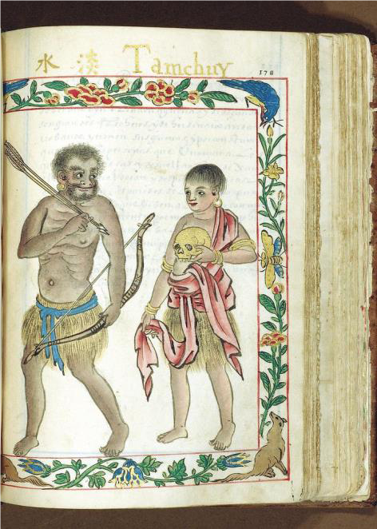
圖2-6-2 淡水的巴賽人
圖2-6-1：2-6-2見於《馬尼拉手稿》（頁170， 178）。
說明：
《馬尼拉手稿》(Manila Manuscript)推測最初可能是由菲律賓總督哥枚司．佩列斯．達斯馬里尼亞斯(Gómez Pérez Dasmariñas，或譯貓吝閉裡)，或他隨行來亞洲的兒子路易斯．佩列斯．達斯馬里尼亞斯(Luis Pérez Dasmariñas，或譯貓吝爺雷，在他父親被華人水手叛亂殺死後繼任菲律賓總督)委託當地華人畫工繪製的，總共有75幅精美的彩圖，完成時間約在1590-1595年之間。研究十七世紀西班牙人在北台灣最常被引用的圖像就是出自《馬尼拉手稿》的這兩幅雞籠與淡水原住民圖。不過當時資訊不流通，許多內容為根據傳聞而非經過實地考證，而且當時繪畫技術與工具不如今日，譬如此兩幅原住民圖明顯是根據同一底圖加工改造成而成，事實上《馬尼拉手稿》全本的人物都是同樣方式繪製。所以觀看本圖要注意其相異之處而非相同之處。（姚開陽：2020，15。）
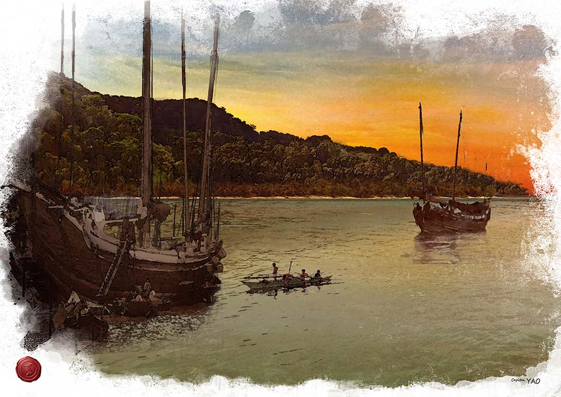
三、宋元時期漢人的來往商貿
---------- （二）元代漢人的季節性移居
連橫《臺灣通史》謂：「歷經五代，終及南宋，中原板蕩，戰爭未息，漳泉邊民漸來臺灣，而以北港為互市之口。」（連橫，76，5）江樹生以為上述連橫的說法，文獻不足、缺乏確據；（江樹生，1970.8，92）。陳漢光則採信此說並徵引其他文獻，論證南宋時代就有少部份漢人移民臺灣，唯可能難以立足或被原住民同化，而不知其存在。（陳漢光，1971，6-7）。1990年代前後，淡水河口「十三行文化遺址」出土了漢朝的五銖錢、唐朝的開元通寶、宋朝的太平通寶、淳化通寶、至道元寶和咸平通寶等銅錢以及華南製造的瓷片，考古學者臧振華據此推測：唐宋時期的漢人可能曾航行至此與臺灣住民交易。（臧振華，1997，729）由此可見，宋代漢人即已跨海來臺登岸交易，已有文獻和考古資料的互證。此外，在宋代東亞海域貿易旺盛的時代背景下，流求（臺灣）因位居連結東北亞和東南亞的航線指標，及其富有海貿轉運之利的條件，激發了漢人民眾主動出海的意志，並在「流求（臺灣）─三嶼（馬尼拉灣）─泉州（大陸東南）」的海貿網絡扮演重要角色。由於「土金」係其中重要商品，而使生產地的北臺灣和便於交易出口的和平島，成為此網絡的一環。和平島上出土的宋代青瓷，則說明當時島上已出現漢人足跡唯和平島上雖有宋代漢人貿易的遺跡，但尚難確認曾有移居聚落出現。
元朝延續宋代發展海洋活動的遺緒，沿海居民出海貿易、揚帆海外屢見不鮮。元代稱臺灣為「琉球」或「瑠球」，對臺灣的認知已遠過於宋代，漢人跨海來臺貿易的活動也比過去更鮮明，並反映當時漢人交易的範圍並不止西岸中部的北港、西北岸的淡水，還擴及於北岸的和平島。例如像汪大淵這樣來往南海諸國的商貿旅行家，不但曾親臨臺灣，甚至可能還登上了和平島。元人已能掌握臺灣與福建、澎湖之間的天候地理條件與各線針路，漢人往來閩臺之間從事漁貿，也更頻繁。在出口商品中，沙金產於基隆附近山區，硫磺出自大屯山；進口商品中的「土珠/中國製玻璃珠」和「處州磁器/龍泉窯」都在和平島出土，反映當時當地進出口的暢旺以及漢人的活躍，甚至有季節性移居的可能。（黃麗生，2019，6；25-26）
圖像待補
圖3-1-1 呈現北宋時期曾有漢人來到和平島貿易，趁晴空萬里，能見度好的日子，登上附近高山極目遠眺北方三島的想像圖。
圖像待補
圖3-1-2 呈現北宋漢人來到和平島貿易，當時島上的居民理應就是巴賽人的祖先。他們並不在族人住的房子接待漢商，而是在海島岸邊另蓋房舍接待之。圖為當時島民「別置館於海隅以待中華之客」的想像圖。
說明：
據文獻記載，北宋時代可能就有漢人來到北海岸貿易，甚至及於和平島及鄰近山嶺地區。宋神宗元豐2年（1079）進士李復的〈潏水集〉轉載其時邵武知縣張士遜所編集的「閩中異事」有一段記述：
泉州東至大海一百三十里，自海岸乘舟無狂風巨浪二日至高華嶼。嶼上之民作鯗腊䰼䱹者千計；又二日至䵶鼊嶼，䵶鼊形如玳瑁；又一日至流求國。其國別置館於海隅以待中華之客。每秋天無雲，海波澄靜，登高極望有三數點如覆釜，問耆老云：是海北諸夷國，不傳。（﹝宋﹞李復，《潏水集》，卷五，19-20。）
上文中的「流求國」即指臺灣。此段文字描述一位北宋的漢人，他從泉州出發經由澎湖再往東航行到「流求國」（臺灣），並在臺灣某部落處落腳，該地部落會在海邊地方別置館舍，專門用來接待「中華之客」。（圖3-1-1）所呈現的是這位北宋漢人在一個秋天無雲，海波澄靜的日子，爬到一附近高山上極目眺望，竟看到三數點像倒置的鐵鍋一樣的島嶼；他於是詢問當地的耆老：「那是什麼地方？」耆老回說：「只知那裡有海域北方的外夷諸國，其他沒聽說、就不知道了。」（黃麗生譯）看到這裡，對基隆一帶比較熟悉的人，很容易會聯想到上文彷彿就是描述在基隆鄰近高山極目遠望彭佳嶼、棉花嶼、花瓶嶼等北方三島的情景──因為整個臺灣海岸只有在基隆附近才有可能登高北望「三數點如覆釜」的海域。事實上今人並不乏在金瓜石一帶遠拍彭佳嶼的實例。新北市瑞芳鎮地方人士還把登山遠眺北方三島包裝成旅遊觀光行程呢！很可能北宋漢人因為來和平島易，就已順便到此一遊了。（圖3-1-2）所呈現的是由此也可以推斷和平島很可能就是上文所述「其國別置館於海隅以待中華之客」的地點。此外，此還可與（圖3-1-3）和平島出土宋代龍泉窯青瓷，及其反映當時漢商已到和平島貿易的歷史相印證。（黃麗生，2019.12，6-8）
圖3-1-3「（宋代龍泉窯）青瓷碗底」（見於鮑曉歐：2015，239，編號HPD-B-C0339），2011/10/24出土於和平島平一路停車場。（鮑曉歐：2015，238-239;303）
圖3-1-4花蓮閃玉貿易的「南島之路」（距今2400 B.P.- 1600/ 1000B.P.）見自「環南海地區臺灣閃玉製玉器、玉料及出土分布」(劉益昌，2019，162，圖49)
圖3-1-5 南宋「流求-三嶼-泉州」土金貿易網絡示意圖
說明：
南宋趙汝適的《諸番志》記載與泉州往來的海外各地，亦包含被稱為「流求」的臺灣在內。其載流求土民「間以所產黃蠟、土金、氂尾、豹脯往售於三嶼。」（﹝宋﹞趙汝適，卷上，流求，46~47。）「三嶼」位於今馬尼拉灣一帶。當時原住民遠航至馬尼拉灣貿易有可能嗎？可能經由哪一條航路？圖3-1-4係據考古資料顯示，臺灣自新石器時代中期以降即與環南海區域長期互動，並在新石器時代晚期後段（距今2400 B.P.- 1600/ 1000B.P.），形成以臺灣花蓮閃玉為特點，經由臺灣東部，遠至菲律賓、婆羅洲、越南、泰國等地之長期交換體系與長程交通路線的「南島之路」。（劉益昌， 2015.12，98-102；劉益昌，2019，159-172。）此「南島之路」的時代下限約在宋代，則《諸番志》所載當時原住民遠航至馬尼拉灣貿易是有可能的，而且係經由臺灣東部的航路南下，所攜土金應產自臺灣東部或北部。據宋元文獻所載，當時的「三嶼」不乏漢人居住，並在海洋網絡中扮演重要角色。圖3-1-5呈現的即是宋代「流求土民（臺灣）─三嶼人（馬尼拉灣）─泉州人（大陸東南）」的海貿網絡。按和平島新石器時代也出現花蓮玉料，而且「流求土民」往售三嶼的「土金」係產自北、東臺灣來推論，北臺灣以及和平島應也在此長程貿易網絡之中。（黃麗生，2019.12，8-9。）
圖像待補
圖3-2-1呈現元代汪大淵「登此山則觀海潮之消長，夜半則望暘谷之日出」的景像
說明：
元代稱臺灣為「琉球」或「瑠球」，對臺灣的認知已遠過於宋代，漢人跨海來臺貿易的活動也比過去更鮮明。像汪大淵這樣的航海商貿旅行家，即曾隨商船經由澎湖親臨臺灣，甚至可能到過北海岸和平島一帶。此可由其所撰《島夷誌略》有關記述得知一二。
文曰：
【琉球】 地勢盤穹，林木合抱。山曰翠麓，曰重曼，曰斧頭，曰大崎。其峙山極高峻，自彭湖望之甚近。余登此山則觀海潮之消長，夜半則望暘谷之日出，紅光燭天，山頂為之俱明。土潤田沃，宜稼嗇。氣候漸暖，俗與彭湖差異。水無舟楫，以筏濟之。男子婦人拳髮，以花布為衫。
煮海水為鹽，釀蔗漿為酒。知番主酋長之尊，有父子骨肉之義。他國之人倘有所犯，則生割其肉以啖之，取其頭懸木竿。
地產沙金、黃荳、黍子、琉黃、黃蠟、鹿、豹、麂皮；貿易之貨，用土珠、瑪腦、金、珠、粗碗、處州磁器之屬。海外諸國蓋由此始。
汪大淵所述的「琉球」就是臺灣。汪大淵在至正年間（約1330-1345年），隨商船航行海外各地並加以記錄，其自許「皆親身所遊覽，耳目所親見。傳說之事，則不載焉。」（﹝元﹞汪大淵，〈島夷誌後序〉）故其所述當可視為接近真實。據汪大淵自述，他從澎湖看到「琉球」極高峻的「峙山」當指玉山。但他所登上的則是可觀日出和潮汐的山頭，與他從澎湖可望見的高聳「峙山」並非同一座山，但這樣的山頭會在哪裡呢？本文以為在北海岸和平島的可能性還不小。蓋汪氏所見「琉球」物產中，沙金係產於基隆附近山區，硫磺則出自大屯山；其他像黃荳、黍子、黃蠟、鹿、豹、麂皮等，亦臺灣北部可以出產之物，可佐證其登基隆一帶山區的可能性不小。就其在當地市場所見外來貨品中，「土珠」是中國燒製的玻璃珠，「處州磁器」就是龍泉窯，其為南宋名窯，至元代仍流傳甚廣。圖3-2-2、圖3-2-3就是和平島出土的元代龍泉窯青瓷，而圖3-2-4和平島出土的「鐵器時代」（1800BP-400BP）的玻璃珠極可能就是元代文物；它們都與汪大淵所見漢人與土著交易的貨品可相印證。
當時汪大淵可能造訪了當時北海岸的轉口貿易市場──淡水或和平島，而且登上附近臨海的山頭看日出、觀海潮。這座山頭在和平島或附近山嶺的可能性極大，因其就近交易沙金的市場，而且不但可臨岸直觀海潮漲退，亦可在山頂觀看山谷日出。而淡水附近的觀音山或大屯山，就不像和平島那麼便於觀看海潮漲退。和平島向以日出美景聞名於世，今所見照片雖多為海上日出，但亦不乏在和平島東砲臺附近所攝的山後日出，皆甚符合汪大淵所述「余登此山則觀海潮之消長，夜半則望暘谷之日出，紅光燭天，山頂為之俱明。」的情境。因此，汪大淵登和平島或附近山嶺的可能性不但遠高於登中南部的山區，也比登淡水附近的觀音山或大屯山的機會更大。（黃麗生，2019.12，9-12。）
圖3-2-2「龍泉窯青瓷碗底」（見於鮑曉歐：2015，241，編號HPD-B-C2895），2012/02/13出土於和平島平一路停車場。（鮑曉歐：2015，240-241;303）
圖3-2-3「龍泉窯青瓷」（見於鮑曉歐：2015，243，編號HPD-B-C2890），2012/02/05出土於和平島平一路停車場。（鮑曉歐：2015，242-243;303）
圖3-2-4「玻璃珠」（見於鮑曉歐：2015，229，編號HPD-B-I-SM-08; HPD-B-I-SM-06; HPD-B-I-SM-11），2011/12/16; 2011/11/10; 2011/12/07出土於和平島平一路停車場。（鮑曉歐：2015，228-229;302）
圖3-2-5「夾金屬箔玻璃珠」（見於鮑曉歐：2015，231，編號HPD-B-I-SM-07），2011/11/26出土於和平島平一路停車場。（鮑曉歐：2015，230-231;302）
說明：
元代漢人已能準確掌握臺灣與福建四州之間、與澎湖之間的相對位置，及其西、南、北岸皆臨海，與澎湖之間有黑水溝、颶風的海域特性和風險。江樹生推論：元代抵達臺灣中北部的漢人當包括漳州、泉州、興州、福州之民，其渡臺航道亦是漳、泉、興、福各有針路；而且四州之民漁貿於臺澎之間，活動頻繁，乃對臺澎海域的狀況、天險與風災有所理解並加記錄，甚至或已形成季節性移民。（江樹生，1970，93。）按此，前述元代汪大淵在「琉球」市場見到的土產「沙金、黃荳、黍子、琉黃、黃蠟、鹿、豹、麂皮」和進口貨「土珠、瑪腦、金、珠、粗碗、處州磁器」以及圖3-2-2、圖3-2-3、圖3-2-4、圖3-2 -5等和平島出土的元代文物，或可呼應前述當時和平島可能已有季節性移居的漢人的推論。（黃麗生，2019.12，12。）
四、明代漢人轉向定居的趨勢
----------- （二）雞籠的漢人聚落
----------- （三）在雞籠的日本人
明代初年「小琉球」、「小琉球頭」的地名，突顯了北臺灣與和平島在國際航道的重要性比過去更為明確。明中葉以降「雞籠」地名的出現，則更進一步伴隨著中國本身及國際商貿情勢的變化。一、就國內而言，明朝在隆慶年間解除海禁，萬曆初年更訂定船引制度，並將雞籠納入適用範圍，與浙閩粵同等待遇，鼓舞沿海居民拓展海上事業，吸引商漁船隻前來雞籠貿易營生。二、就國際而言，（一）明萬曆後期，倭寇跨國擾掠，驚動東亞海域，朝鮮、琉球、雞籠、閩浙俱為其目標，明朝因此而將雞籠納入閩浙海防範圍。（二）中國、日本、琉球之間的貿易需求旺盛，雖缺乏安全合理平衡的機制，仍吸引跨國海貿者投入其中，位於福建－琉球－日本航線要津的雞籠，吸引中日商人到此貿易。（三）西班牙、荷蘭在東亞競逐，並介入原有東亞海貿體係，也開始關注「雞籠」的價值，不但擴充了漢商在其間周旋取利的空間，也吸引更多漢人到雞籠交易營生。
綜上所述，在明末西班牙人占領雞籠之前，島上漢人從季節性移居逐漸轉向定居型態乃為時勢所趨。今人論和平島歷史文化多以西班牙占領為起始，事實上此島自4500BP-3000BP 的史期時代就有人居；降至約1000BP-800BP巴賽人的祖先即已遷入，宋代漢人來此而能與之相遇，至元代可能已有季節性移居，到明末則呈現逐漸轉向定居的趨勢。面對當前和平島漢人文化無所不在的現實，吾入有必要進一步追溯其源，召喚歷史記憶，以明瞭自古漢人來到和平島經營漁貿事業的歷程，及其背後寬闊深遠的跨海視野與人文底蘊。
圖4-1-1《順風相送》的「小琉球頭」
說明：
現藏於英國牛津大學題為《順風相送》的明初鈔本針簿，其底本概為永樂7年（1409）左右所遺，上載由福建往琉球的航路，其中在今基隆一帶的地方標為「小琉球頭」，楊國楨註此「小琉球頭」就是和平島，並整理其路線為：由太武往烏坵到東墻（湄州）開洋，或東湧（馬祖東引）開洋，或梅花（位於長樂）開洋，經小琉球頭（臺灣基隆和平島）─彭家山（彭佳嶼）─花瓶嶼─釣魚嶼─赤坎嶼─枯美山（琉球久米島）─古巴山（琉球慶良間群島）─琉球國濠霸（今那霸），由此又可銜接日本松浦（平戶）來往呂宋以及琉球來往日本兵庫的航線。（楊國楨，1998，66。）此外，出使琉球國的明朝使節，自嘉靖13年（1534）起記錄詳細航程，亦把基隆和平島一帶標示為「小琉球」或「小琉球頭」（陳宗仁，2005，50-56。）由此可見，明初已被改稱為「小琉球頭」的和平島（及其附近山嶺地區，如今大雞籠山），已是由中國福建─琉球國─日本航路必經的中繼站，在東亞國際航線上的重要地位。此所以和平島在16、17世紀即為國際轉口貿易中心的地理背景。（黃麗生，2019.12，13。）
圖4-1-2明代《籌海圖編》的「小琉球」
說明：
圖4-1-2顯示明嘉靖年間抗倭名臣胡宗憲所編《籌海圖編》的「輿地全圖」中，將臺灣稱為「小琉球」，而稱現在的琉球群島為「大琉球」。但該書亦載從福建前往日本的針路：「梅花東外山開船，用單辰針、乙辰針，或用辰巽針十更，船取小琉球。小琉球套北過船，見雞籠嶼發梅花、瓶嘉山。」「其入寇則隨風所之，東北風猛則由薩摩或由五島至大小琉球。」（卷2，11；34。）即從福州城外的梅花所東面出海，往「小琉球」的方向一晝夜，航經「小琉球」北面會看到「雞籠嶼」，即可航向棉花嶼、彭佳嶼。則「小琉球」實際上應指北臺灣一帶，所稱「雞籠嶼」當即指今和平島，為此航線的重要地標。（黃麗生，2019.12，13。）
圖4-1-3明代《籌海圖編》的「雞籠山」
說明：
圖4-1-3所示為胡宗憲《籌海圖編》卷一〈福建沿海山沙圖〉標示有「雞籠山」的局部地圖。此圖「雞籠山」與福州的相對方位雖不符合實際，但仍顯示出從福州城外的「梅花所」東面出海，經五虎門、上下竿塘（今南北竿）到雞籠山、彭加山（彭佳嶼）、釣魚嶼、花瓶山（花瓶嶼）的航線。此處的「雞籠山」當即指和平島（或及其附近山嶺）。《籌海圖編》是一部著重於防倭海防的地理地圖專書，故《四庫全書》將之歸為「邊防之屬」。就此意義而言，「雞籠山」不但是中、琉、日國際貿易和中、琉使節來往所必經，亦為防倭海防布局所考量，並為後來明朝在萬曆末年將雞籠納入閩浙海防體系，預埋伏筆。
圖4-1-4 1616年長崎代官村山等安率領大批艦隊進攻台灣，因風被吹散，部份來到雞籠登陸後遭遇巴賽人戰敗全軍覆沒，船長切腹自殺。（姚開陽繪製。姚開陽：2020，46。）
說明：
《明史‧外國傳》載：嘉靖末年，倭寇擾閩，為戚繼光所敗，逃到雞籠遁居，並焚掠雞籠而去，原本住在島上海濱的部落殘破，乃避居於山後。（卷323三，外國四）迨至萬曆37年（1609）日本薩摩藩發兵三千侵入琉球，又於萬曆40年（1612）侵入寧波、溫州等地島嶼，再於萬曆44年（1616）5月侵犯寧波外海、大陳島、溫州、南麂島等地，皆為明朝官兵所逐。明朝兵部乃加強海防，令以溫州、台州、寧波三區俱屬防倭要衝，雞籠、淡水則正對南麂，尤當日夕戒嚴。（《明實錄》，神宗，卷551）正式將雞籠納入閩浙抗倭海防體系。同年6月，琉球國中山王遣通事蔡廛通報倭寇造戰船五百餘隻，欲協取雞籠山，恐為害閩海。（《明實錄》，神宗，卷546）而後雞籠果然經成為倭寇侵犯的目標。（黃麗生，2019.12，15；21-22。）
先是萬曆43年（1615），長崎代官村山等安得到新崛起的將軍德川家康頒發「高砂國渡船朱印狀」，擬派遣次男村山秋安組織艦隊征台，但事為琉球國王尚寧知道，在6月遣通事蔡廛通報明朝，福建巡撫黃承玄於是派沈有容為福建水師提督備戰。村山等安的艦隊包括13艘船隻、3,000多人於萬曆44年（1616）5月4日從長崎出發，卻在琉球遇到風暴，其中明石道友率領的三艘船則抵達台灣北部，其中一艘登陸雞籠被原住民包圍，日兵一、兩百人全部陣亡，船長也被迫自殺。（姚開陽：2020，46-47。）這件事被平戶英國商館長Richard Cocks記述：
那艘抵達台灣的船來到一小灣，船員們想要再往內陸探查，卻在還未查明住民之前，即被襲擊。日本人看到不能脫逃，又不願意落敵入手中而切腹自殺。（轉見於陳宗仁，2005，156）
另兩艘漂流到閩北攻擊當地後回國。其餘七艘在琉球修理並曾在台灣的竹塹港停泊，後轉戰金門浙江沿海與明軍交戰，其中一艘被沈有容軍擊沉。（湯錦台，2011，85-87。）後乃有萬曆45（1617）年沈有容生擒倭寇於東沙（即今馬祖東莒）之事跡。同年4月，巡按福建監察副御史韓仲雍召來被俘的倭目以及船中頭目，問其何故侵擾雞籠、淡水？何故謀據北港？何故擅掠內地及侵奪琉球等事，以海貿利益勸倭放棄掠寇，但倭寇對雞籠、淡水的意圖或未稍減。8月，倭寇又欲入侵雞籠、淡水而不能得逞。蓋當時等安遣其子秋安謀犯雞籠、淡水，屢失利而不敢歸，轉而侵入浙台地方，復前往南麂、白犬澳等處搶擄漁戶往來劫掠，適遇颶風遂為明兵擒獲。（《明實錄》，神宗，卷560）如上所述，從當時倭寇侵犯的區域路線來看，其進犯雞籠不成後，常以閩、浙沿海地區為劫掠目標；明朝海軍因而將雞籠納為閩浙海防範圍。（黃麗生，2019.12，22-23。）
圖4-1-5《日本一鑑》的「雞籠山」，轉見自（陳宗仁，2005，60。）
圖4-1-6明代《日本一鑑》所述雞籠航道形勢示意圖，見自（黃麗生，2019.12，14。）
說明：
「小琉球」在明中業以前，又稱為「小東島」，概指包含淡水、大屯山以及和平島、雞籠山一帶地區。由於倭患頻仍，新安人鄭舜功受命於嘉靖34年（1555）至日本探查，返國撰著《日本一鑑》，圖4-1-5即是其所附的臺灣島圖，圖上即繪有「雞籠山」並記有小東島出硫黃等。文曰：
自回頭徑取小東島，島即小琉球，彼云大惠國。按此海島，自泉永寧間，抽一脈渡海，乃結彭湖等島，再渡諸海，乃結小東之島。自島一脈之渡，西南乃結門雷等島；一脈之渡，東北乃結大琉球、日本等島。小東之域，有雞籠山；山乃石峰，特高於眾中，有淡水出焉。（〈桴海圖經〉，卷1，頁3。）
圖4-1-6顯示和平島及其鄰近山嶺，位於連結澎湖、泉州，再西南航向屯門、雷州等島，東北通往大琉球和日本的航路要道與關鍵地標，並反映其具有在臺海兩岸、國際海貿市場的潛力。鄭氏的認知必來自於當時來往熟悉「小琉球」和「雞籠山」的漢人。明代中葉以後，和平島已從「小琉球頭」改稱「圭籠頭」或「雞籠山」、「雞籠」。隆慶、萬曆年間解除海禁後，漢人前往貿易明顯增加。（黃麗生，2019.12，13-14。）
圖4-1-7 1582年西班牙船長Francisco Guall航線示意圖，見自（黃麗生，2019.12，17。）
說明：
萬曆10年（1582）3月西班牙船長Francisco Gualle 自墨西哥阿卡普魯科港（Acaplco）經菲律賓抵達媽港（按：指澳門）；同年7月24日又由該港出發，往東南東航行，經由臺灣東岸海道，再於臺灣東北面海域，轉向東北及東微北而行。該船長並於航海日記述及一位名叫Santy的漢人所說有關「美麗之島」東北端的情況。圖4-1-7即是Francisco Gualle所記錄16世紀末西班牙人由美洲──太平洋航線──菲律賓──澳門──臺灣東岸海道──抵達琉球之航線示意圖。他並記錄其僱用的漢人Santy所說：當時漢人尤其是閩南人活躍於東亞海域以及閩臺兩岸貿易的實情：
上述華人告余謂，該諸島稱Islands Lequeos，其數甚眾，富良好港灣，居民之面孔及身體，與呂宋即菲律賓群島之Visaya相似，服裝亦同。彼又謂：其地有金礦，島民時駕小舟攜野鹿、皮革、小粒金及極精細工藝品，運往中國海岸交易。並稱所言確為事實，蓋彼曾九度親赴該諸島，將同樣商品，由該地用船載往中國沿岸。後余在媽港及中國沿岸調查，證明此中國人所言確屬實情，余亦深信如此。
漢人Santy所言「美麗之島」東北端有金礦、產粒金的地方，指當為基隆、宜蘭一帶。則鄰近的和平島極可能就是島民和漢人從事臺海兩岸的貿易港。這位西班牙船長Francisco Gualle還在澳門和中國沿岸地區查證而確認了上述情形。可見16世紀末漢人到和平島貿易已甚普遍。（黃麗生，2019.12，15-17。）
圖4-1-8 1597年Hernando de los Rios所繪雞籠港與臺灣形勢圖，見自（鮑曉鷗，2008，70-71。）
說明：
和平島位居菲律─中國─琉球─日本航線要津、出產黃金、貿易繁盛、漢人來往以及島民類似菲律賓土著等等情報，觸動西班牙人進一步勘查雞籠。1597年Hernando de los Rios不但提出調查報告，並附上只標出「雞籠港」和「淡水港」的臺灣全島以及周邊菲律賓、中國沿海的地圖，對雞籠加以正面描述，謂其面向日本，鄰近中國，可以從中國獲得給養，從日本得到銀的供應，積極鼓吹進占雞籠。（陳宗仁，2005，143-147。）1619年明道會士Bartolome Martinez寫於馬尼拉的報告〈征服福島的益處〉也鼓吹征服福爾摩沙，但建議在Pacan（北港）建立堡壘。（[西]鮑曉鷗，2008，附錄2，355。）數年後，西班牙軍隊果然於1626年由馬尼拉開拔，但選擇在北臺灣的三貂角登陸，並決定雞籠為統治的中心。可見Hernando de los Rios對雞籠和淡水的調查報告發揮了決定性影響。（黃麗生，2019.12，17-18。）
圖4-2-1呈現的是明代漢人在西班牙入已在和平島上形成聚落，並可能已在海邊建立了雞籠最早的媽祖廟，但最早的建築可能是茅草屋。傳說和平島的天后宮曾藏有萬曆皇帝御賜的「海波不揚」匾額，唯現已無實物可徵。（姚開陽繪製。姚開陽：2020，39。）
說明：
《明史‧外國傳》載：嘉靖末年倭寇焚掠雞籠，使巴賽部落殘破而避居於山後；直到中國漁船從魍港（即蚊港）北來貿易，才恢復常態；並謂從雞籠、淡水至福州港口五更可達；東北至日本，七十更可達。（卷323三，外國四）此處「雞籠」當指和平島及其鄰近山嶺一帶地區；所述除了說明航線以外，也附上航行時程，反映明代中葉以後，中國海商漁民時到雞籠營生，並由此通往日本。（黃麗生，2019.12，15。）
隨著隆慶、萬曆年間解除海禁後，漢人至臺灣從事商貿、漁業者日眾並形成鮮明聚點，遂使雞籠、淡水成為明朝官方認可而給予船引的港口。據曹永和的研究，自嘉靖末年到萬曆初年，漢人商、漁船已常見於臺灣海岸，南從北港，北到淡水、雞籠的海岸。（曹永和，1979，165。）當時台灣雖然還沒有進入明朝版圖，但明朝已將雞籠、淡水視為船引制實施的範圍，並與當時島上的漢人有所連結。明朝規定雞籠、淡水的船隻數量與閩、浙、粵等省同一等級，只占東西洋的三分之一，而有別於前往東西二洋進行國際貿易的船隻。（《漳州府志‧洋稅考》）張燮認為這是因為雞籠位於自家門外要地，不能以外國視之。（《東西洋考》，卷5）（黃麗生，2019.12，19。）
《東西洋考》透露了當時漢人在雞籠生活的訊息：（一）漢人可能在此逐漸形成定居聚落：巴賽人不養雞，不食雞，只是拔其毛尾以裝飾；漢人食雞雉必當自行烹調，自備相關器皿食材調料，甚至可能出現了服務商旅食宿的店家以及往返居留的商貿漁工聚落。（二）漢人重建了雞籠的貿易市場，與巴賽人密切互動：嘉靖末年倭患摧毀了雞籠部落，巴賽人避居山；後漢人由魍港北上雞籠，並逐漸成為常態，重建了貿易市場，登島的漢商常被認識的巴賽人邀請到家作客。（三）明朝把雞籠納為防倭抗倭的海防範圍：雞籠與漳州相距不遠，易引起倭寇覬覦，於是由福建派出偵探，一年進出雞籠多次，反映出萬曆後期，漢人在雞籠的活動已不只為了從事漁業商貿，而延伸到明朝海防抗倭相關事宜。（黃麗生，2019.12，20-21。）
和平島的天后宮為北臺灣最早建立的媽祖廟。其流傳的建廟源始謂：明朝時，有漢人船隻因風浪停泊在社寮島，後因船上供奉的湄州媽祖顯靈示意要留在島上，居民乃置茅屋供奉；此外，該廟原存有「海波不揚」的匾額，傳說係明萬曆年間李欽差奉諭送來的御賜寶物。（柯淑純、林玉齡，1995，88-89。）此匾雖已不存，但有關它的歷史記憶，正與明朝將雞籠納入海防範圍，以及《東西洋考》：「閩中偵探之使，亦歲一再往。」的敘事相呼應。綜上所述或可推論：至遲在明萬曆晚期，漢人已在雞籠（和平島）建立了媽祖廟，她不但是定居聚落的象徵，並可能是明朝官方與當地漢人連結的綰帶。和平島出土的考古文物，亦可佐證上述推論的可能性。（黃麗生，2019.12，23。）
圖4-2-2「萬曆號中一件克拉克瓷器」-1（見於鮑曉歐：2015，244）
圖4-2-3「克拉克瓷」（和平島出土）（見於鮑曉歐：2015，245，編號HPD-B-C2894），2012/02/13出土於和平島平一路停車場。（鮑曉歐：2015，244-245;303）
圖4-2-4「萬曆號中一件克拉克瓷器」-2（見於鮑曉歐：2015，246）
圖4-2-5「克拉克青花瓷」（見於鮑曉歐：2015，247，編號HPD-B-C2899），2012/11/07出土於和平島平一路停車場。（鮑曉歐：2015，246-247;303）
說明：
和平島出土的明代考古文物主要有：克拉克瓷、安平壺和青花瓷。克拉克瓷（Kraak porcelain）是萬曆年間（1573-1620）至1640年盛產，以出口為大宗，生產重鎮為漳州，並為中國首批大量輸往歐洲的瓷器，其在16世紀末至17世紀初也流行於東南亞。圖4-2-2、圖4-2-3、圖4-2-4、圖4-2-5顯示和平島出土的克拉克瓷盤，其裝飾花樣和尺寸，就與在馬來西亞發現約1625年的「萬曆號」沈船所見到的同款。克拉克瓷是當時重要的國際海貿商品，萬曆克拉克瓷在和平島的出土，反映出當時和平島已為國際海貿據點的事實，而且漢人在此扮演重要角色。
圖4-2-6「安平壺」（1936和平島出土-1）（國立臺灣大學人類學博物館藏，3164。見於鮑曉歐：2015，250）
圖4-2-7「安平壺」（1936和平島出土-2）（國立臺灣博物館藏，AH1575-6。見於鮑曉歐：2015，252）
圖4-2-8「安平壺」（2011和平島出土-1）（見於鮑曉歐：2015，251，編號HPD-B-C0364），2011/10/28出土於和平島平一路停車場。（鮑曉歐：2015，303）
圖4-2-9「安平壺」（2011和平島出土-2）（見於鮑曉歐：2015，253，編號HPD-B-C0433），2011/11/18出土於和平島平一路停車場。（鮑曉歐：2015，303）
圖4-2-10「安平壺」（2011和平島出土-3）（見於鮑曉歐：2015，255，編號B-C0411），2011/12/03出土於和平島平一路停車場。（鮑曉歐：2015，303）
說明：
安平壺在16世紀末至18世紀期間，也常見於東南亞各地，是一種主要產於福建和廣東的陶器，大多輸往東南亞地區，作為裝鹽、食物及液體的器皿。和平島出土的安平壺應為明代的文物。圖4-2-6是1936年日本人在和平島上原聖巴斯提安堡壘外挖掘出土。該圖顯示和平島出土的安平壺數量還不少且甚為集中，看起來像轉口貿易的商品，而不是專為當地人使用的容器。圖4-2-7為同批出土的其中之一，日據時代原由「基隆鄉土館」收藏，後轉藏於「台灣總督府博物館」（即今臺灣歷史博物館）。2011年10-12月間出土於和平島停車場圖的安平壺，雖皆僅為局部殘片，但色澤不一，反映其品類多樣之一斑。4-2-8、圖4-2-9、圖4-2-10為其中部份。（鮑曉歐：2015，250-257）
前述出土的明代文物，克拉克瓷和安平壺，都是當時重要的國際海貿商品；和平島在西班牙人占領之前，就已經是漢人經營轉口貿易的據點。其到雞籠（和平島）經商逐漸形成聚落，並建廟供奉媽祖，祈求航海平安、交易順利，亦甚自然。此即天啟6年（1626）西班牙人占領雞籠（和平島）時，即見到島上已有漢人聚落與市集的原由。西班牙人占領雞籠（和平島）後，漢人聚落依然存在，並未離開。據西班牙人描述，當時漢人聚落「巴利安」（Parián）就在西班牙人所建的薩爾瓦多堡的後面。（Jose Maria Alvarez, 2006, 36-37.）
西班牙入在雞籠（和平島）上建立堡壘時，也是由漢人協助建築的；這些漢人數量雖然不多，仍在島上開墾了田地。（Jose Eugenio Borao Mateo, 2008, 191-193.）當時雞籠（和平島）的漢人聚落約在薩爾瓦多堡後面的島上南側一帶，並已形成建築良好的市街，有各式商店和商人；此街後來西班牙人稱為「聖薩爾瓦多街」，也是漢人所稱的「福州街」。（陳宗仁，2005，246-247）由此可見，西班牙人占領之前，雞籠（和平島）的漢人聚落已有商、農、漁、工各種行業，在在反映其轉向定居性移民聚落發展的趨勢。且其後歷經西、荷和明鄭統治的考驗，島上人口或有榮枯，但漢人生息於茲不絕如縷，繁衍成聚落也甚自然，堪可視為後來明鄭、清代漢人踵續移居的歷史奠基。（黃麗生，2019.12，25。）
圖4-3-1 豐臣秀吉欲賜示「高砂國」而不成
1593年豐臣秀吉派遣部屬書前往呂宋勸貢，歸途經過雞籠（和平島）時，曾登岸想要示賜「高砂國」勸原住民部族入貢無功而返。本畫是意象，藉由特使持「高砂國」木匾孤單站在礁岩上暗示找不到可冊封的對象。（姚開陽繪製。姚開陽：2020，45。）
圖4-3-2 十六世紀末在雞籠的日本人
十六世紀末已有日本人以雞籠為轉運中心並從事採金。這裡也是少數日本天主教徒的避禍之所。此圖呈現在西班牙占領以前，雞籠日本人聚落的想像圖。（姚開陽繪製。姚開陽：2020，49。）
說明：
《明史‧外國傳》載：嘉靖末年，倭寇擾閩，為戚繼光所敗，逃到雞籠遁居，並焚掠雞籠，原本住在島上海濱的部落殘破，乃避居於山後；不久有中國漁船從魍港（即蚊港）飄至，遂往來貿易，習習以為常；並謂自雞籠、淡水至福州港口五更可達；東北至日本，七十更可達。（卷323三，外國四）反映明代中葉以後，漢人海商漁民時到雞籠（和平島）營生，並由此通往日本。此外，日本人也可能到此貿易。史載16世紀末雞籠已有日本人從事採金。（W. Davidson, 1903,. 464.）此所以1626年西班人登上雞籠（和平島）時，發現島上除了中國人以外，也有日本人市集的原由之一。（Jose Maria Alvarez, 2006, 36-37.）圖4-3-2 呈現了西班牙占領雞籠（和平島）以前，日本人已在島上形成聚落的情景。
除了採金，日本人也將本島視為海盜活動與轉口貿易的據點。1592年日本海盗村上(Murakami)及小野(Kono)等人，就先後以雞籠（和平島）為基地，將搶奪而來的生絲、瓷器、香料集中於此，再以合法商人的身份運回日本高價出售。圖4-3-1是描述1593年豐臣秀吉派遣部屬原田喜右衛門(原田孫七郎)攜帶諭令文書前往呂宋勸貢，在歸途經過雞籠（和平島）時，曾登岸想要示賜「高砂國」勸原住民部族入貢，卻找不到適合談判對象無功而返的想像圖。（湯錦台， 2011，60。）
當時日木人在雞籠（和平島）的並不多，京都人喜左衛門是其中最有名的。1603年，他因船難來到雞籠，娶了當地巴賽人女子Insiel Islena為妻，生有兩個女兒與一個早逝的兒子。喜左衛門是天主教徒，教名Jasinto Quesaymon，諳葡萄牙語；西班牙人來到雞籠時雇用他做為通譯與嚮導，並為他的兩個女兒舉行盛大的洗禮做為宣傳。（康培德，2016，208-230。）喜左衛門的案例，凸顯了日本人在雞籠（和平島）居留的信仰背景及其人數極為有限的特性。
此外，1615年，長崎代官村山等安欲派遣次男村山秋安組織艦隊征台不成後，1616年再從長崎出發，其中明石道友率領其中一艘船欲登陸雞籠（和平島），反被巴賽人包圍而全部陣亡，船長也被迫自殺。（陳宗仁，2005，156）此反映雖在西班牙占領以前，日本人在雞籠（和平島）已成聚落，唯限於活動性質與人數有限，其當時並未形成在此地長期發展的態勢。
徵引文獻
[唐]魏徵，《隋書》（臺北：鼎文書局，1993），卷81，東夷傳，流求國。
[宋]李復，《潏水集》，收入《欽定四庫全書》，集部三，別集類，第五卷。
[宋]趙汝適，《諸蕃志》，收入《欽定四庫全書》，史部十一，地理類十，卷上，流求；毗舍耶。
[元]汪大淵著，蘇繼廎校釋，《島夷誌略校釋》（北京：中華書局，1981第一版，2000二刷）。
《明實錄》（臺北：中央研究院歷史語言研究所，漢籍電子文獻），神宗，卷314，；卷318；卷496；546；卷551；卷560。
[明]宋濂，《元史》（臺北：鼎文書局，1993），卷210，外夷三，三嶼、瑠求。
[明]胡宗憲，《籌海圖編》，收入《欽定四庫全書》，史部十一，地理類五，邊防之屬，卷2。
[明]張燮，《東西洋考》，收入《欽定四庫全書》，史部十一‧地理類卷5。
[明]鄭舜功，《日本一鑑》（上海：商務印書館據舊抄本影印，1939），〈桴海圖經〉，卷1。
[清]張廷玉，《明史》（臺北：鼎文書局，1993），卷323，外國四。
[清]谷應泰：《明史紀事本末》（北京：中華書局，1977），卷62，〈援朝鮮〉。
向達校註：《兩種海道針經》（北京：中華書局，2000年）。
不著編者，《漳州府志‧洋稅考》摘錄，收入《清一統志‧臺灣府》附錄（臺北：大通書局，臺灣文獻叢刊第六八輯，不著年月）。
不著撰者，《基隆市志‧地政篇》（基隆：基隆市政府民政局，1957.3初版，1981.6再版.）。
洪連成，《基隆市志‧風俗篇》（基隆：基隆市政府，1979）。
李壬癸，《宜蘭縣南島民族與語言》（宜蘭：宜蘭縣政府，1996）。
何慈毅，《明清時期琉球日本關係史》（上海：江蘇古籍出版社，2002）。
柯淑純、林玉齡主編，《社寮文史調查手冊》（基隆：基隆市文化中心，1995）。
陳宗仁，《雞籠山與淡水洋:東亞海域與臺灣早期歷史研究1400-1700》（臺北：聯經，2005）。
陳漢光，《臺灣移民史略》（臺北：臺北文獻委員會，1971）。
連橫，《臺灣通史》（臺中：臺灣省文獻委員會，1976）。
曹永和，《臺灣早期歷史研究》（臺北：聯經出社事業公司，1979）。
楊國楨：《閩在海中：追尋福建海洋發展史》（南昌：江西高校出版社，1998年）。
詹素娟、劉益昌編，《大臺北都會區原住民歷史專輯》（臺北：臺北市文獻委員會，1999）。
臧振華編，《中國考古學與歷史學之整合研究》（臺北：中央研究院歷史語言研究所，1997）。
劉益昌編，《臺灣史前史專論》（臺北：中央研究院、聯經出版社，2015.12初版／2019.9二刷）。
劉益昌，《典藏臺灣史．史前入群與文化》（臺北：玉山社，2019年）。
[西]鮑曉鷗（Jose Eugenio Borao Mateo）、洪曉純主編，《尋找消逝的基隆：臺灣北部和平島的考古新發現》（臺北：南天書局，2014）。
[西]鮑曉鷗（Jose Eugenio Borao Mateo）原著、Nakao Eki譯，《西班牙人的台灣體驗1626-1642》（The Spanish Experience in Taiwan, 1626-1642）（臺北：南天書局，2008）。
[西]荷西‧馬利亞‧阿瓦列斯（Jose Maria Alvarez）原著，李毓中、吳孟真譯，《西班牙人在臺灣（1626-1642）》（南投市：國史館台灣文獻館，2006年）。
W. Davidson, The Island of Formosa: Past and Present, Londonand New York: MacMillan & Co.1903.
連橫，《台灣通史》，臺北市：五南圖書出版股份有限公司，2017。
唐羽，《台灣採金七百年》，臺北市：財團法人綿綿助學基金會，1985。
曹永和，《台灣早期歷史研究》續集，臺北市：聯經出版社，2000。
陸傳傑、曾樹銘，《航向台灣》，臺北市：遠足文化公司，2013。
康培德，《殖民想像與地方流變—荷蘭東印度公司與臺灣原住民》，臺北市：聯經出版事業公司，2016。
湯錦台，《閩南人的海上世紀》，臺北市：果實出版社，2008。
湯錦台，《大航海時代的台灣》，臺北市：如果出版社，2011。
詹素娟、劉益昌，《大臺北都會區原住民歷史專輯——凱達格蘭調查報告》。臺北市：北市文獻會，1999。
江樹生，〈清領以前臺灣之漢族移民〉，《史學彙刊》，第三期，1970.8。
李壬癸，〈台灣北部平埔族的分類及其語言根據〉，《臺灣風物》，第41卷第4期，1991.3。
宋景秀，〈嘉慶以前三貂鹽寮地域史的建構〉，《中央研究院臺灣史研究》，第三卷第一期，1996.6。
周子揚，〈十三行文化晚期舊社類型與Basai族關係之討論〉，收入鮑曉鷗、洪曉純主編，《尋找消逝的基隆：臺灣北部和平島的考古新發現》（臺北：南天書局，2014）。
康培德，〈文獻資料下的十七世紀北臺灣的海岸住民〉，收入鮑曉鷗、洪曉純主編，《尋找消逝的基隆：臺灣北部和平島的考古新發現》（臺北：南天書局，2014）。
曹永和，〈早期臺灣的開發與經營〉，收入氏著《臺灣早期歷史研究》（臺北：聯經出社事業公司，1979）。
曹永和，〈明代臺灣漁業誌略〉，收入氏著《臺灣早期歷史研究》（臺北：聯經出社事業公司，1979）。
臧振華，〈考古學與臺灣史〉，收入氏編《中國考古學與歷史學之整合研究》（臺北：中央研究院歷史語言研究所，1997）。
劉益昌，〈玉器的交換體系研究──製造與資源控制〉，收入氏編《臺灣史前史專論》（臺北：中央研究院、聯經出版社，2015.12初版/2019.9二刷）。
黃麗生，〈明代萬曆時期的島嶼議題:以《明實錄》為中心〉，《海洋文化學刊》第二十一期（基隆：國立臺灣海洋大學出版，2016年12月）。
蘇繼廎，〈敘論〉，收入《島夷誌略校釋》（北京：中華書局，1981第一版，2000二刷）。
[日]中山孝志原著，賴永祥、王瑞徵譯，〈十七世紀荷人勘察臺灣金鑛紀實〉，《臺灣文獻》，第七卷，一、二期，1956.6.27
[法]鄂盧梭，〈記《島夷誌略》〉，收入《島夷誌略校釋‧附錄》（北京：中華書局，1981第一版，2000二刷）。
Bartolome Martinez, “Conveniencia de la conquista de Isla Hermosa,”鮑曉鷗、洪曉純譯，〈征服福島的益處‧節錄〉，收入《尋找消逝的基隆：臺灣北部和平島的考古新發現》（臺北：南天書局，2014）。
李毓中、José Luis Caño Ortigosa，〈中西合璧的手稿《謨區查抄本》(Boxer Codex)初探〉，收入復旦大學文史研究院編《西文文獻中的中國》，臺北市：中華書局，2012。
凌純聲，〈中國遠古與太平印度兩洋的帆筏戈船方舟和樓船的研究〉，《民族研究所專刊》之十六。臺北市：中央研究院民族研究所，1970。
翁佳音，〈近世初期北部台灣的貿易與原住民〉，收入黃富山、翁佳音主編《近世初期北部台灣的貿易與原住民》。臺北市：中央研究院台灣史研究所籌備處，1999。
翁佳音，〈大臺北古地圖考釋〉http://twstudy.iis.sinica.edu.tw/oldmap/doc/Taipei/Taipei05.htm
凃振源，《基隆和平島的地方敘事之反思與重構─地圖與繪圖取徑下的批判研究》（臺北：臺灣大學建築與城鄉研究所碩士論文，2012.7）。
陳孜鴻，《隆和平島公園地形景點評估之研究》（臺北：臺灣大學理學院地理環境資源學系碩士論文，2014.6）。
姚開陽，《十七世紀西班牙人在台灣歷史場景的研究與圖像繪製》（基隆：臺灣海洋大學海洋大學研究所碩士論文，2019.1）。